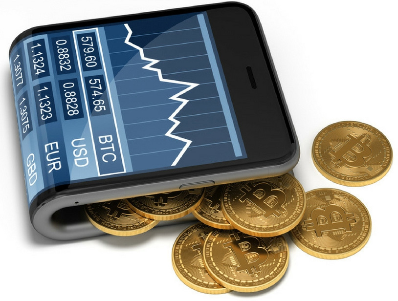

Una criptomoneda,
criptodivisa (del inglés cryptocurrency)
o criptoactivo es un medio digital de intercambio
que utiliza criptografía fuerte para asegurar las transacciones,
controlar la creación de unidades adicionales y verificar la
transferencia de activos usando tecnologías de registro
distribuido. Las criptomonedas son un tipo de divisa alternativa o
moneda digital. Existe controversia respecto a que las
criptomonedas tienen que ser de control descentralizado o monedas
centralizadas por los bancos centrales u otra entidad. El control
de cada moneda funciona a través de una base de datos
descentralizada, usualmente una cadena de bloques (en inglés
blockchain), que sirve como una base de datos de
transacciones financieras pública. La primera criptomoneda que
empezó a operar fue Bitcoin en 2009, y desde entonces han
aparecido otras con diferentes características como Litecoin,
Ethereum, Bitcoin Cash, Ripple, Dogecoin.
Una cadena de bloques, conocida en inglés como
blockchain, es una estructura de datos cuya
información se agrupa en conjuntos (bloques) a los que se les
añade metainformaciones relativas a otro bloque de la cadena
anterior en una línea temporal. De esta forma, gracias a técnicas
criptográficas, la información contenida en un bloque solo puede
ser repudiada o editada modificando todos los bloques posteriores.
Esta propiedad permite su aplicación en un entorno distribuido de
manera que la estructura de datos blockchain puede ejercer de base
de datos pública no relacional que contenga un histórico
irrefutable de información. En la práctica ha permitido, gracias
a la criptografía asimétrica y las funciones de resumen o hash, la
implementación de un registro contable (ledger) distribuido que
permite soportar y garantizar la seguridad de dinero digital.

Las wallets o
monederos de criptomonedas, son el puente que nos
permiten administrar nuestras criptomonedas. Una pieza de software
o de hardware con los que realizar las operaciones de recepción y
envío a través de la red blockchain de cada criptomoneda. Uno de
los elementos más importantes en mundo criptográfico y de la
tecnología blockchain son las wallets o monederos. El uso de estas
herramientas es indispensable a la hora de gestionar nuestras
criptomonedas. Es por ello, que elegir una adecuada y que cumpla
con nuestras necesidades es tan importante como disponer de una.
El Bitcoin es un protocolo, proyecto de código
abierto y red entre iguales que se utiliza como criptomoneda,
sistema de pago y mercancía. Fue concebida en 2008 por una
entidad conocida bajo el seudónimo de Satoshi Nakamoto, cuya
identidad concreta se desconoce. Satoshi trabajó en el código
fuente de la aplicación de referencia junto a otros
desarrolladores voluntarios hasta diciembre de 2010, momento en el
que decidió concluir su actividad pública. Su unidad de cuenta
tradicional se denomina bitcóin (en plural bitcoines) y se
clasifica como moneda digital. Sirve para contabilizar y
transferir valor, y cada bitcóin se compone de 100 millones de
satoshis, que es la unidad de cuenta mínima. Para llevar el
registro de todas las transacciones o «intercambios monetarios»
que suceden dentro de Bitcoin, se utiliza una base de datos
distribuida. Dicha base de datos almacena la información agrupada
en bloques dispersos por la red y encadenados entre sí, formando
una estructura de datos conocida con el nombre de «cadena de
bloques». Se suele describir a esta cadena de bloques como un
libro contable digital, distribuido y a prueba de manipulaciones,
en el que queda reflejado de forma permanente y verificable el
historial de todas las transacciones. Por el hecho de
implementarse dentro de una red compuesta por varios nodos de
comunicación entre iguales, donde no existe ningún nodo central
susceptible de ser manejado por una organización concreta, se
considera que Bitcoin es un sistema descentralizado, no respaldado
ni controlado por ningún gobierno o banco central, en el cual se
realizan transacciones sin necesidad de intermediarios.
El Dogecoin es una criptodivisa derivada de Litecoin que usa como
mascota un perro Shiba Inu del meme de Internet «Doge». La segunda
quincena de junio de 2014, se había minado más de 100 mil millones
(100,000,000,000) de Dogecoins. La criptomoneda Dogecoin fue
creada por el programador y antiguo ingeniero de IBM Billy Markus,
natural de Portland, Oregon, quien originalmente intentaba
juguetear con una criptodivisa ya existente llamada «Bells»,
basada en el Animal Crossing de Nintendo, con la esperanza de
alcanzar una base de usuarios más amplia que la de los inversores
que crearon el Bitcoin, y algo que no estuviera involucrado con la
controvertida historia detrás de Bitcoin (concretamente su
asociación con el mercado negro Silk Road). Al mismo tiempo, su
amigo Jackson Palmer, un trabajador del departamento de marketing
de Adobe Systems en Sydney, Australia, y la persona que concibió
originalmente la idea del Dogecoin, fue animado en Twitter por un
estudiante del Front Range Community College a hacer la idea
realidad, lo que llevó a Palmer a contactar con Markus.